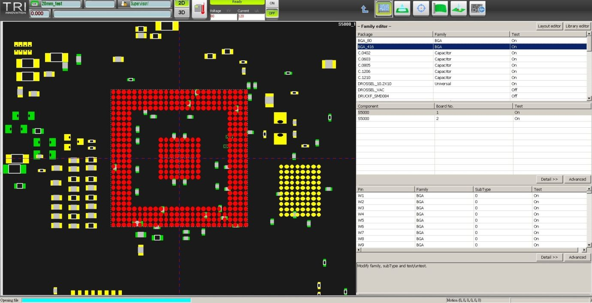
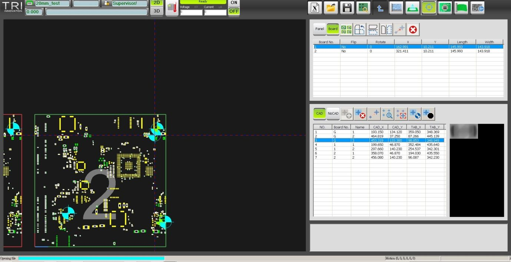
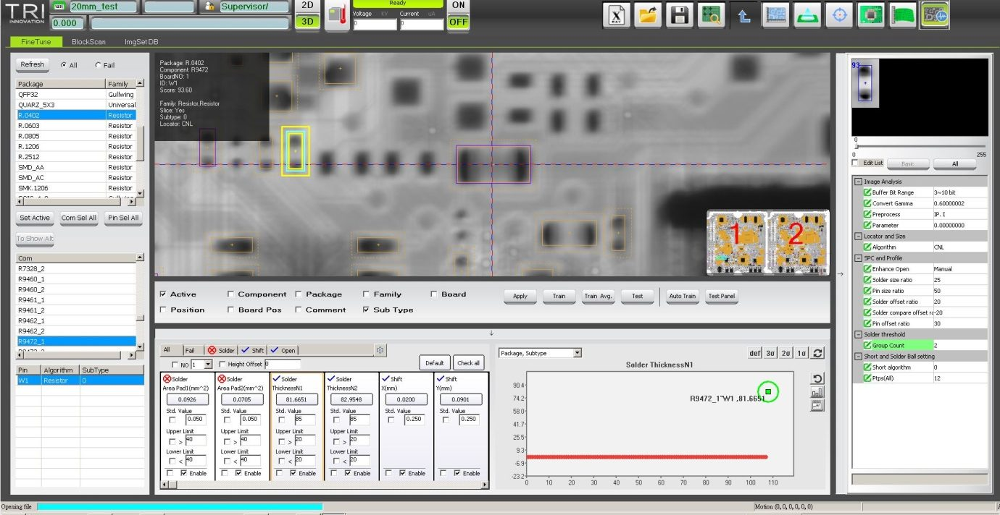
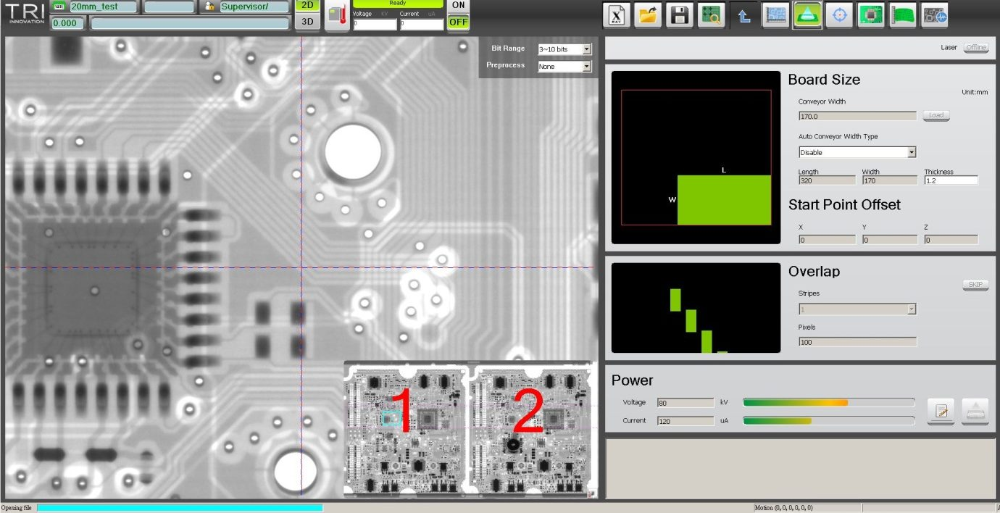
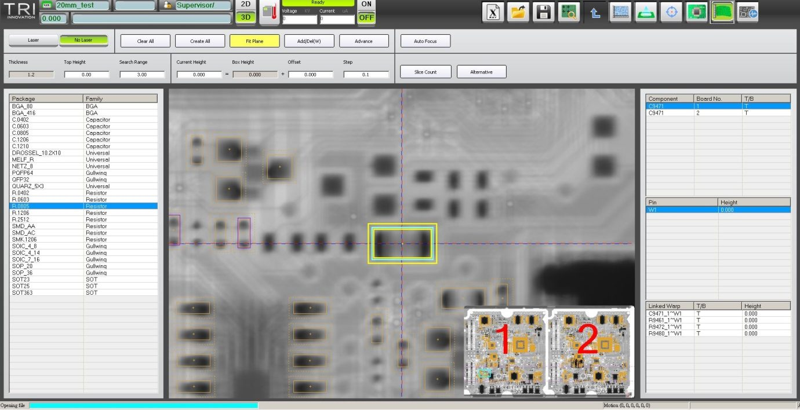
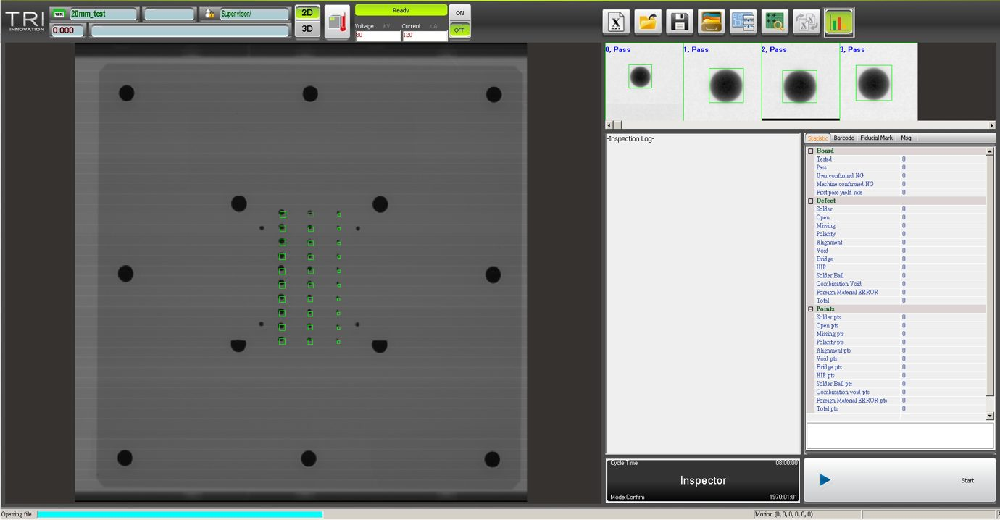

A seven-stage tool that inspects every board before it ships
一套七階段的工具，檢測出貨前的每一片板
TRI’s flagship 3D AXI (Automated X-ray Inspection) software inspects solder joints on every PCB leaving an SMT line. Operators program each board through a seven-stage workflow — CAD → Scan → Alignment → Library → Warp → BlockScan → FineTune — in shifts, under line-speed pressure where a confusing flow means real downtime. The same software ships to global automotive, server and semiconductor accounts and must run identically across all ten machine variants.
德律的旗艦 3D AXI（自動 X 光檢測）軟體，負責檢測 SMT 產線上每一片 PCB 的焊點。操作員要走完七個階段的流程——CAD → Scan → Alignment → Library → Warp → BlockScan → FineTune——以輪班的方式為每一片板編程；在產線速度的壓力下，流程只要讓人卡住，就是真實的停機。而且同一套軟體要賣給全球的汽車、伺服器、半導體大客戶，必須在 10 個機種上都長一樣、操作一致。
Sole owner of the research and the redesign — for six years
研究與改版的唯一負責人——六年
Before touching the design, I measured the baseline
動手設計之前，我先量測了基準
I ran a task-based usability test with 14 operators, logging every error and scoring SUS for each of the seven stages, plus field interviews at five customer sites. The point was to start the redesign where the data failed — not where opinion was loudest.
我對 14 位操作員進行任務式易用性測試，逐筆記錄錯誤並對七個階段各自量測 SUS，再到五個客戶現場做訪談。目的是讓改版從數據最痛的地方開始——而不是聲音最大的地方。
Fig. 1 — Baseline SUS by stage (n=14). Four stages fall below the SUS-68 benchmark; the three late algorithmic stages — Warp, BlockScan, FineTune — fail at grade E.
圖 1 — 各階段基準 SUS（n=14）。四個階段低於 SUS-68 基準；後段三個演算法階段——Warp、BlockScan、FineTune——以 E 級不及格。
What the data said: Alignment logged the most errors of any stage — 52, nearly all the same mistake — and FineTune scored the floor. That gave me an evidence-ranked list of exactly where to aim, before a single pixel moved.
數據說了什麼：Alignment 的錯誤數是所有階段裡最多的——52 筆，而且幾乎都是同一個錯——FineTune 則是分數墊底。這讓我在還沒開始畫任何介面之前，就先有了一份照證據排好順序、清楚知道該從哪裡下手的清單。
Each design move traces back to a finding
每一個設計動作，都能溯回一個研究發現

The default view led with data operators never read
預設畫面主打的，是操作員根本不看的資料
Field interviews showed the home screen opened on thumbnails, Board Summary and Device State — none of which an operator consults to make a programming decision.
現場訪談發現，首頁一打開就是縮圖、Board Summary 與 Device State——那些都不是操作員做編程判斷時會去看的資料。
So I did →於是我 →Cut them from the default view and surfaced only what drives the next decision. The density stays available for experts, but the screen no longer opens on noise.
把它們從預設畫面移走，只留下會影響下一步判斷的資訊。需要高密度資料的專家還是隨時叫得出來，但畫面不會再一打開就全是雜訊。

Alignment logged the most errors — 52 — almost all one mistake
Alignment 階段錯誤最多——52 筆——幾乎都是同一個錯
Error logging across 14 operators put Alignment at the top of the count. Nearly every error traced to the same thing: forgetting to switch the Global/Local mode.
14 位操作員的錯誤記錄顯示，Alignment 的錯誤數在所有階段中排第一。幾乎每一筆都指向同一件事：忘了切換 Global/Local 模式。
So I did →於是我 →Redesigned the mode control so the active state is unmistakable and a wrong turn is recoverable — instead of silently producing bad alignment that surfaces only later.
重新設計模式控制元件，讓當前狀態一目了然、走錯也能復原——而不是默默產出錯誤的定位、事後才被發現。

FineTune scored the floor (SUS 51) — it assumed expertise operators lacked
FineTune 分數墊底（SUS 51）——它預設了操作員沒有的專業
The lowest-scoring stage of all seven. It demanded algorithm knowledge most shift operators didn’t have, and interviews surfaced a real fear: setting a wrong value and crashing the machine.
七個階段中分數最低。它要求多數輪班操作員沒有的演算法知識，訪談也揭露了一個真實的恐懼：設錯值、把機器撞了。
So I did →於是我 →Added recommended parameters and inline guidance so non-experts weren’t stranded — and collapsed the old F3/F4 screens into one Fine Tune page, replacing manual height calculation with direct mouse-wheel adjustment.
加入推薦參數與行內引導，讓非專家不會卡住——並把舊版 F3/F4 兩個畫面整併成單一 Fine Tune 頁，以直接的滑鼠滾輪調整取代手動計算高度。
Each stage rebuilt around one job
每個階段都重建得只做一件事

Scan setup
掃描設定

Warpage / height
翹曲 / 高度

Inspection summary
檢測總覽
Fig. 2 — The largest single saving, reconstructed. Two pages (F3 / F4) requiring a hand-calculated, typed height became one Fine Tune page where height is set by mouse-wheel with a live readout — collapsing the slowest step and cutting its time 51%.
圖 2 — 單項最大的時間縮短（示意重繪）。原本要手算、手打高度的兩頁（F3／F4），併成單一 Fine Tune 頁，改以滑鼠滾輪即時調整——把最慢的步驟收成一頁，時間縮短 51%。
What I traded off — and why
我取捨了什麼——以及為什麼
-
01
Recommended defaults without removing expert control
給出推薦預設，但不拿走專家控制權
Trade-off: hand-holding vs. expert speed. The FineTune fear told me non-experts needed a safe starting point — so I gave recommended values, but kept every one of them editable for the engineers who know better.
取捨：要不要手把手帶新手，會不會拖慢專家。FineTune 那種恐懼讓我知道，非專家需要一個安全的起點——所以我給了推薦值，但每一個都還能改，留給更懂的工程師。
-
02
Kept the dense data tables — didn’t dumb it down
保留高密度資料表——沒有把它簡化掉
Trade-off: a cleaner-looking screen vs. expert power. This is a tool for engineers who need the numbers; density is the constraint of the domain, not a flaw to design away. I removed noise, not capability.
取捨：畫面要好看，還是要讓專家做得快。這是給需要看數字的工程師用的工具；高密度是這個領域本來就有的限制，不是該被「設計掉」的缺點。我拿掉的是雜訊，不是能力。
-
03
One interface across all machine variants
一套介面，套用所有機種
Trade-off: per-machine optimisation vs. consistency at scale. I chose a single standardised interface — codified in a written UX Design Guideline (buttons, layout, dialogs, typography) — so every new machine inherits a familiar flow, and so I could maintain it alone for six years.
取捨：替每一台機器各別調到最好，還是讓一整條產品線保持一致。我選了後者：做成單一標準化的介面，並把它寫成一份 UX 設計原則文件（按鈕、排版、彈窗、文字），讓每一台新機都直接沿用同一套流程——也因此我才能一個人維護它六年。
The gains landed exactly where the data said they would
成果落在數據預告的那些地方
Independently timed by FAE teams, programming time on a 4,160-component board fell 37% (295→186 min) — a denser 3,495-component board fell from 386→237 min too — and the heaviest gains landed on the very stages the baseline study had flagged. The redesigned interface then shipped across the AXI line, in multiple languages, to global automotive, server and semiconductor accounts.
由 FAE 團隊獨立量測，4,160 顆零件那塊板的編程時間減少 37%（295→186 分）——另一塊 3,495 顆零件的較密板也從 386→237 分——改善最大的，正好就是基準研究點出來的那幾個階段。後來這套重設的介面也跟著 AXI 產品線一起出貨，支援多國語系，交付給全球的汽車、伺服器與半導體大客戶。
Measuring first meant redesigning where the data screamed
先量測，才能從數據最痛的地方開始改起
The baseline study changed everything: it ranked the work by evidence, so the redesign started where the data screamed, not where opinion was loudest. That lesson carried straight into my later work on enterprise IT tooling and platform UX — when the domain is genuinely complex, the highest-leverage design move is almost always structural and evidence-led, not cosmetic.
基準研究改變了一切：它用證據幫工作排出先後，讓改版從數據最痛的地方開始，而不是從嗓門最大的地方開始。這個體會也一路延續到我後來在企業 IT 工具和平台 UX 的工作上：當一個領域真的很複雜，最有效的設計往往是去動結構、靠證據說話，而不是表面的修飾。